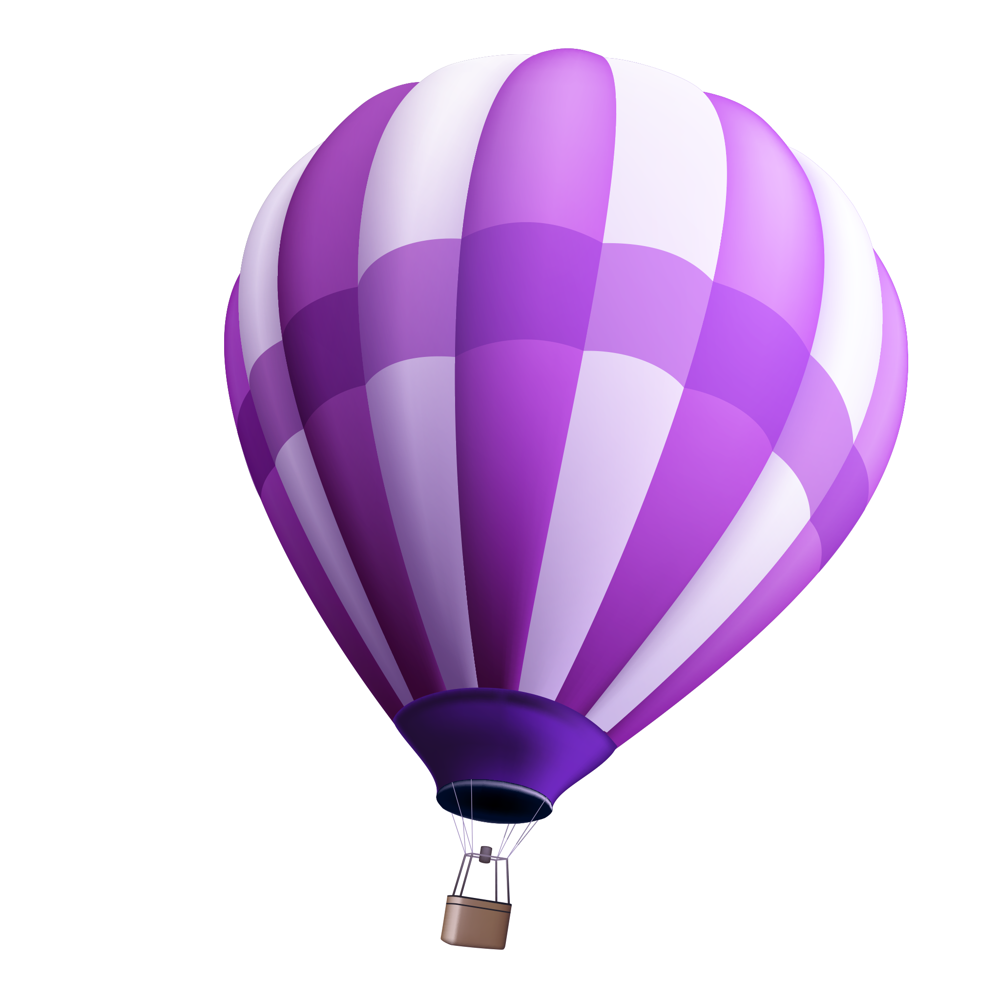
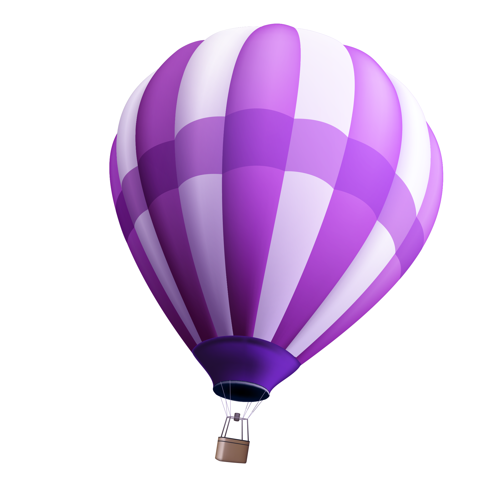
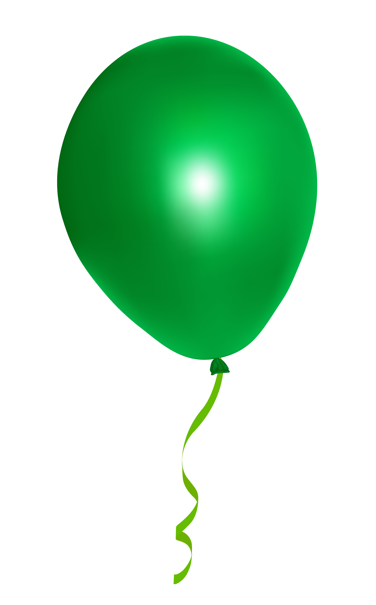
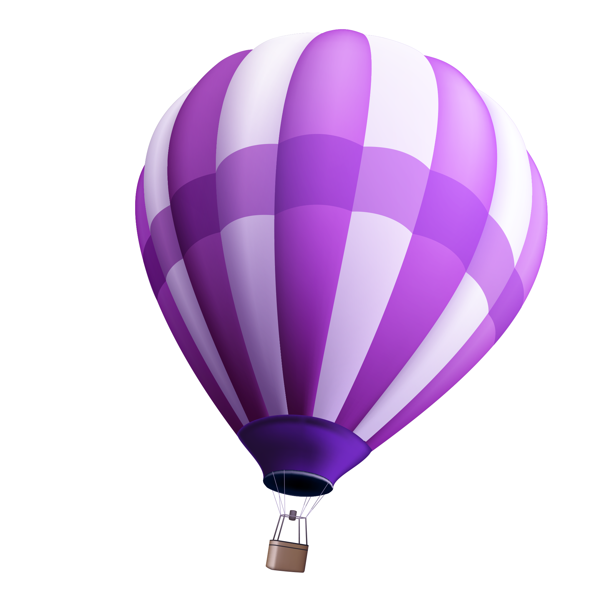
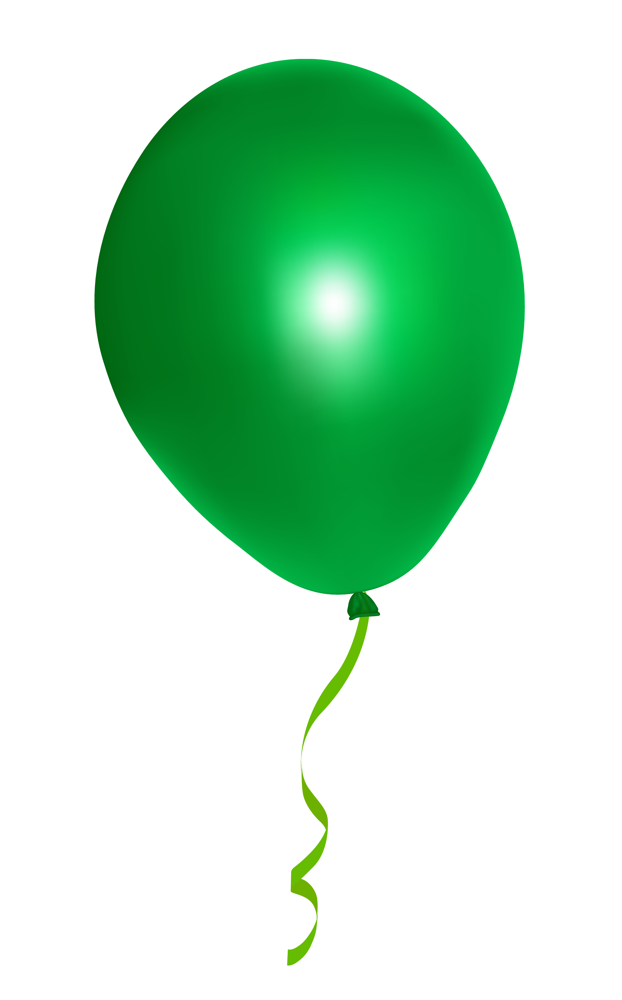
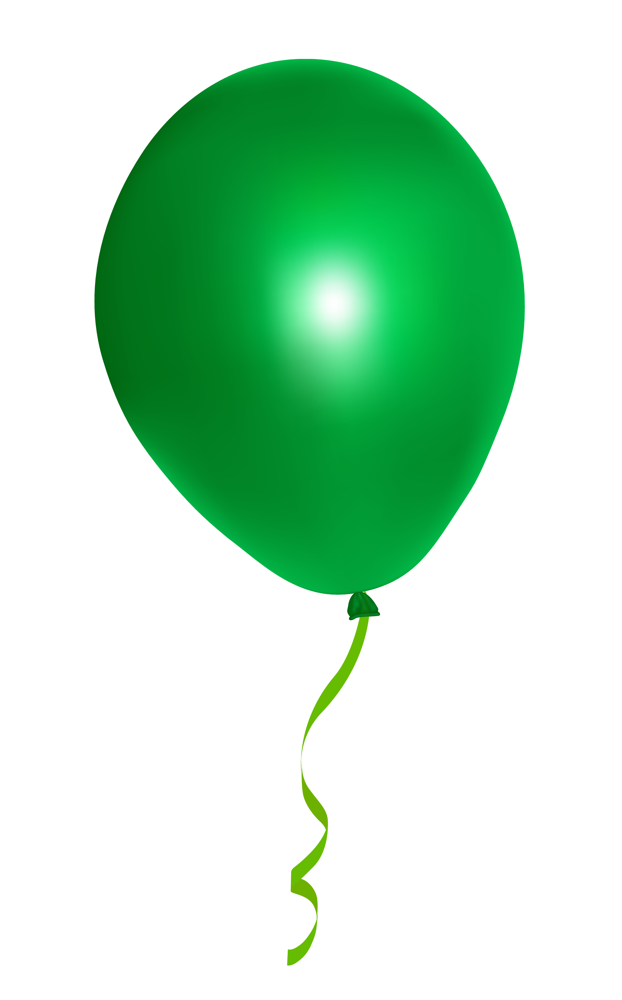
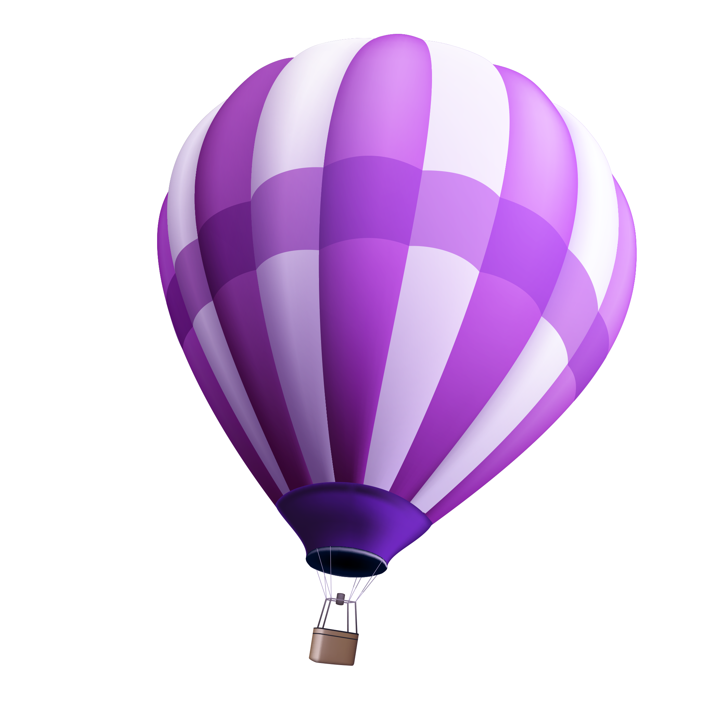
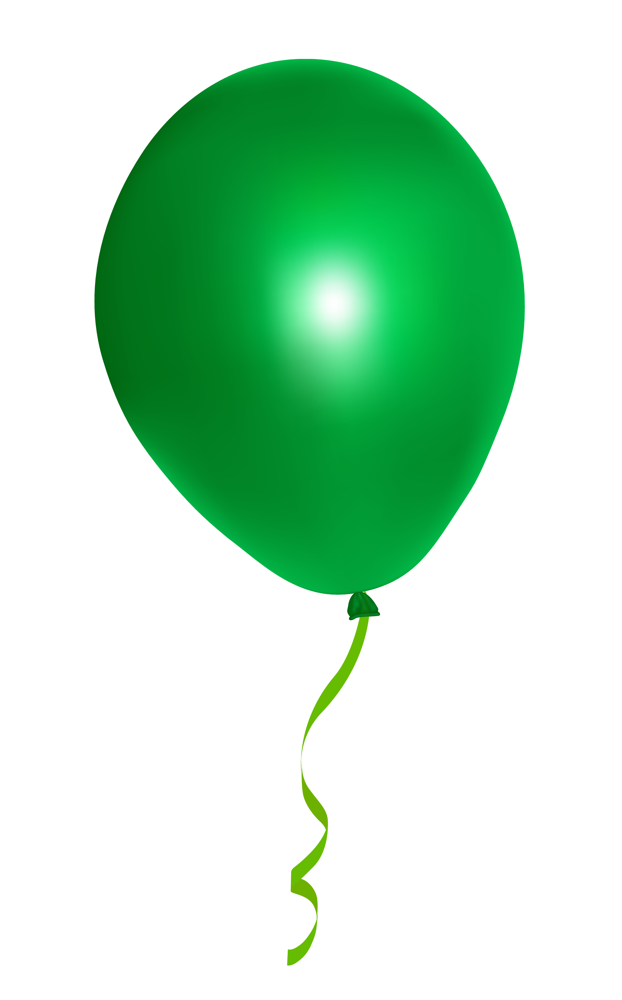

I'm Joker.
a psychopath

 


 






Some of the most unique aspects of the Joker are his physiology and characteristics. We're not talking beyond his stark-white skin and green-colored hair, but rather his body's natural ability to reject toxins. In addition to being literally fearless, the Joker has toxic immunity. He can use his toxins on other people, but they won't affect him in any way. Perhaps that's another reason Scarecrow's fear toxin didn't work on the Joker -- his physiology makes him immune to such poisons.
Some of the most unique aspects of the Joker are his physiology and characteristics. We're not talking beyond his stark-white skin and green-colored hair, but rather his body's natural ability to reject toxins. In addition to being literally fearless, the Joker has toxic immunity. He can use his toxins on other people, but they won't affect him in any way. Perhaps that's another reason Scarecrow's fear toxin didn't work on the Joker -- his physiology makes him immune to such poisons.
Deadpool may be the leading character when it comes to breaking the fourth wall, but he certainly isn't the only one who can do it. There are plenty of people who have some form of cosmic awareness, or at least who can talk directly to the readers (or viewers). When it comes to the DC Universe, some of the characters who've done it are Lobo, Phantom Stranger, and Madame Xanadu. But when it comes to the DC Animated Universe, the Joker is the one who likes to talk to the audience.

Batman is by far one of the most somber, deadpan characters there is, but it's that earnestness that enables him to win the majority of his battles. Sure, Bruce Wayne cracks a few jokes here and there when he needs to blend in, but when he's wearing the mask, when he's Batman, he cannot be more serious -- and focused. Dick Grayson was always able to lighten the mood, and he once smiled in a picture with a young, pre-Red Hood Jason Todd. That's about the extent of his lighthearted side. However, if there is one person who could make Batman laugh, it's the Joker.